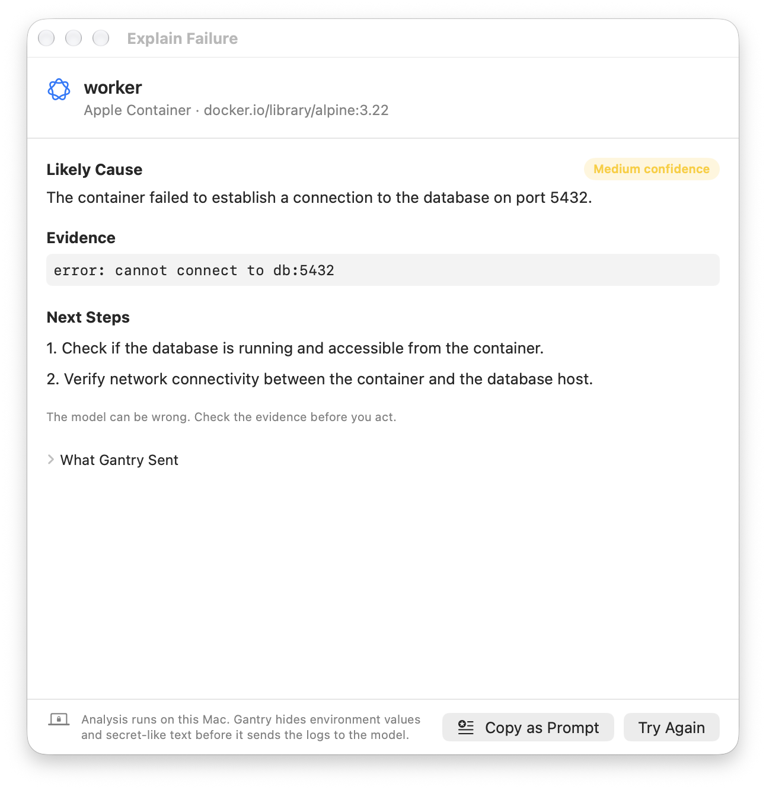

Mac-приложение для Apple container и Docker
Gantry — бесплатное приложение для Mac с открытым кодом для инструмента container от Apple и для Docker, локально и по SSH. Контейнеры, кластеры Kubernetes, машины и проекты Compose на apple/container — в одном окне, рядом с вашими хостами Docker. Бесплатная альтернатива Docker Desktop и OrbStack для Mac.
Gantry 0.29.0 · macOS 26+ · Apple silicon и Intel · лицензия MIT · 28 языков · MCP-сервер в комплекте

Команды и элементы управления
Инструмент container от Apple и Docker работают в командной строке. У каждой команды из этой таблицы есть элемент управления в Gantry.
- container
- docker
- docker compose
- kubectl
| Команда | В Gantry |
|---|---|
container run, container create | Окно создания контейнера и быстрый запуск: образ, имя, команда, порты, окружение, тома, DNS-домен, своё ядро и аргументы загрузки; Вставить команду… читает строку docker run или container run |
container start, stop, kill, delete, prune | Панель инструментов, контекстное меню и панель в строке меню |
container logs | Вкладка «Логи»: слежение в реальном времени, поиск по regex, фильтр по уровню, цвета ANSI; Экспортировать логи… сохраняет видимые строки |
container stats | Вкладка «Статистика», спарклайны в сводке и таблица «Использование ресурсов» |
container exec | Вкладка «Терминал» (интерактивная оболочка) и вкладка «Процессы» |
container inspect | Вкладки «Обзор» и «Инспекция»; Экспортировать как Compose… превращает конфигурацию в файл Compose |
container copy | Вкладка «Файлы»: сохранение на Mac и перетаскивание в Finder (контейнер должен быть запущен) |
container image pull, tag, delete, prune, inspect | Образы: скачивание с прогрессом, теги, удаление, очистка, инспекция; Проверить на уязвимости… с Trivy или Grype |
container build | Сборка сервисов build: из файла Compose; раздел Сборки показывает сборки, которые запустил Gantry |
container machine create, run, stop, delete, set-default, set, inspect | Машины: создание, запуск, остановка, удаление, машина по умолчанию, CPU и память, оболочка, инспекция, «Открыть в VS Code» |
container cluster create, list, delete, write-config, load-image | Кластеры: кластеры Kubernetes, размеры рабочих узлов и общее хранилище образов (1.7), узлы, kubeconfig, «Просмотреть ресурсы», «Загрузить в кластер» (1.5 и 1.6) |
Нет команды compose | Запуск Compose: поднимает docker-compose.yml из Finder, меню «Файл» или перетаскиванием |
Контейнеры
Создавайте, запускайте, открывайте и изменяйте контейнеры на каждом хосте.
- container run
- docker exec -it
- docker cp
- docker port
- Вставьте
docker run - Вставьте команду
docker run,podman runилиcontainer run, и Gantry заполнит форму нового контейнера и покажет флаги, которые не может использовать. Любой контейнер можно скопировать обратно как команду или сохранить как шаблон. Как это работает - Встроенный терминал exec
- Полноценная эмуляция терминала в любом работающем контейнере, локальном или удалённом, — с цветовыми темами (System, Solarized, Dracula, Nord).
- Файловый браузер с перетаскиванием
- Просматривайте файловую систему контейнера, переносите файлы туда и обратно и перетаскивайте целые папки прямо из Finder — на хостах Docker и apple/container.
- Открыть в браузере и пробросить
- Один клик открывает опубликованный порт. Порты SSH-хостов автоматически пробрасываются на
localhost, а если порт занят, Gantry выберет свободный, который можно изменить. - Открыть доступ из интернета
- Один клик — и опубликованный порт доступен через Cloudflare Tunnel. Gantry сам установит
cloudflared, а затем даст быстрый туннель (без аккаунта, URL вида*.trycloudflare.com) или именованный туннель на вашем домене. Удобно для предпросмотра при разработке, вебхука или чтобы ИИ-агент добрался до контейнера на вашем Mac. - Секреты из Связки ключей в окружении
- Храните пароли и токены в Связке ключей macOS (Настройки → Секреты) и используйте их как переменные окружения в окнах «Новый контейнер» и «Быстрый запуск». Форма показывает
keychain:NAME, а не значение, и Gantry читает значение только при создании контейнера. Экспорт в Compose, шаблоны и «Скопировать как команду» записывают имя, а не значение. - Действия над многими сразу
- Выберите несколько контейнеров, образов, томов или сетей и запустите, остановите, перезапустите или удалите их за один шаг, с ходом выполнения и отчётом по каждому объекту.
- Статистика в реальном времени
- CPU, память, сеть и дисковый ввод-вывод на живых графиках с замером каждую секунду.
- Контейнеры на внешнем диске
- Перенесите все данные apple/container на внешний диск, храните тома на диске по своему выбору и получайте понятное предупреждение, если этот диск не подключён. Читать руководство

Образы и сборки
Загружайте, собирайте, сканируйте и удаляйте образы.
- docker build
- docker pull
- trivy image
- docker system prune
- Сборка и скачивание образов
- Перетащите Dockerfile в окно, чтобы собрать образ с живым логом, или скачайте образ по имени с прогрессом по слоям. Добавляйте теги, удаляйте неиспользуемые образы, смотрите историю слоёв. Значок отмечает образы, собранные для другой архитектуры CPU, чем у хоста.
- История сборок
- У каждого хоста есть раздел Сборки: сборки с шагами, попаданиями в кэш и логом. Gantry хранит сборки, которые запускает сам, с именами аргументов сборки, но без их значений. На хостах Docker он также читает
docker buildx history(buildx 0.23.0 или новее). apple/container не хранит историю сборок, поэтому там видны сборки, которые запустил Gantry. - Проверка образов с Trivy или Grype
- Выберите Проверить на уязвимости… для образа. Gantry запускает установленный вами Trivy (0.50.0 или новее) или Grype (0.74.0 или новее), например из Homebrew, и группирует находки по уровню: от критического до неизвестного. Экспортировать SBOM записывает CycloneDX, а с Trivy — также SPDX. Это работает на apple/container, локальном Docker и Docker по SSH; на Docker по SSH Gantry проверяет копию образа с тегом в реестре.
- Приватные реестры
- При скачивании образов используется
docker login, который вы уже выполнили: Gantry берёт учётные данные из~/.docker/config.json, хелперов учётных данных и Связки ключей — при создании контейнера, в «Быстром запуске» и в Compose. - Освободить место
- Одна панель показывает, что занимает место, — висячие образы, остановленные контейнеры, неиспользуемые тома, кэш сборки — с размерами, и удаляет каждую категорию или всё сразу. На apple/container она также выполняет «Сжать диск».
Compose
Запускайте docker-compose.yml в Docker или в apple/container и создавайте его из работающих контейнеров.
- docker compose up -d
- docker compose down
- docker compose logs -f
- Compose на каждом хосте
- Контейнеры группируются по проектам Compose. Поднимайте файл compose на любом хосте — в локальном Docker, по SSH или в apple/container — со встроенным редактором YAML; запуск подстраивается под движок.
- Экспорт в Compose
- Выберите Экспортировать как Compose… для одного или нескольких контейнеров и получите
docker-compose.ymlс портами, точками монтирования, сетями, политикой перезапуска, проверкой работоспособности, лимитами и другими параметрами. Значения, похожие на секреты, становятся${NAME}, если вы не включите их в файл. На хостах apple/container Gantry предупреждает о флагах, которые Compose не может выразить. Как это работает
Kubernetes
Просматривайте каждый контекст kubeconfig или создавайте кластер в apple/container.
- kubectl get pods -A
- kubectl logs -f
- kubectl port-forward
- container cluster
- Браузер Kubernetes
- Просматривайте поды, Deployments, StatefulSets, DaemonSets, сервисы, Ingress, ConfigMaps, секреты, узлы и события любого контекста kubeconfig. Следите за логами подов, открывайте оболочку, пробрасывайте порт, масштабируйте, перезапускайте развёртывание и применяйте YAML. Gantry сам обращается к API Kubernetes, поэтому кластер, созданный командой
container cluster create, можно просматривать сразу, ничего больше не устанавливая:kubectlне нужен. - Кластеры Kubernetes
- Создавайте кластер Kubernetes командой
container cluster: задавайте размер управляющего узла и рабочих узлов отдельно, выбирайте CNI и смотрите узлы, версию Kubernetes и контекст kubeconfig. Узлы кластера защищены от случайной остановки и удаления. Подробнее

Хосты и парк
Этот Mac, хосты Docker по SSH и apple/container на одной панели.
- docker -H ssh://user@host
- docker context use
- docker stats
- Одна сводка для всех хостов
- Локальный демон, SSH-хосты и apple/container на одном экране: спарклайны CPU и памяти в реальном времени, разбивка контейнеров по состояниям и проблемы с работоспособностью, которые ведут прямо к виновнику.
- Удалённые хосты по SSH
- Туннель точно как у
docker -H ssh://черезdial-stdio: бастионы ProxyJump, аутентификация несколькими ключами, автоматическое переподключение. На сервер ничего ставить не нужно, секреты — в Связке ключей. Импорт в один клик из~/.ssh/configиdocker context ls. - Использование ресурсов на всех хостах
- Одна сортируемая таблица запущенных контейнеров на всех подключённых хостах: хост, имя, образ, CPU, память, сетевой и дисковый ввод-вывод, время работы. Фильтруйте по имени, образу или хосту либо покажите один хост. Двойной щелчок по строке открывает контейнер. Таблица берёт измерения, которые Gantry и так делает каждые 5 секунд, поэтому не открывает новых потоков статистики. Откройте её из бокового меню, через ⌘K или по ссылке
gantry://open/usage.


Логи и сбои
Читайте, ищите и экспортируйте логи. Находите причину, когда контейнер даёт сбой.
- docker logs -f
- container logs
- docker events
- Логи в реальном времени
- Слежение в реальном времени, поиск по regex или по тексту через ⌘F, фильтр по уровню (Error→Trace), цвета ANSI, буфер на 50 тыс. строк — и объединённые логи стека для всего проекта Compose.
- Экспорт логов
- Экспортировать логи… (⇧⌘E) сохраняет видимые строки с учётом фильтра по уровню, поиска и периода в файл
.logили.txt. Скопировать видимые строки копирует их. На хостах Docker можно добавить время и показать только последние записи: от 5 минут до суток. - Уведомления о сбоях
- Нативное уведомление, когда контейнер на любом хосте падает, исчерпывает память или становится неработоспособным. Нажмите его, чтобы сразу перейти к контейнеру, — об остановках, которые вы выполнили сами, уведомлений нет.
- «Объяснить сбой» с Apple Intelligence
- Выберите Объяснить сбой… для упавшего контейнера или неудачной операции. Gantry отправляет последние логи и сведения, из которых удалены значения переменных окружения и текст, похожий на секреты, модели на устройстве и показывает вероятную причину, доказательства и следующие шаги. Длинные логи могут уходить в Private Cloud Compute (macOS 27). Панель показывает, что именно было отправлено.
- Снимки экрана в «Объяснить сбой»
- Перетащите, вставьте или добавьте до 3 изображений в «Объяснить сбой», например снимок экрана со страницей ошибки. Изображения остаются на этом Mac: их читает только модель на устройстве (macOS 27), никогда не Private Cloud Compute.

macOS
Строка меню, уведомления, Spotlight, «Быстрые команды» и клавиатура.
- ⌘K
- ⌥⌘P
- ⇧⌘E
- Часть macOS
- Уведомления с действиями «Перезапустить», «Показать логи» и «Скопировать как промпт». Spotlight находит контейнеры, проекты Compose и хосты. Действия для Siri и «Быстрых команд», виджет состояния парка хостов, элементы Пункта управления для служб apple/container или избранного контейнера и ссылки
gantry://для скриптов. - Прогресс в строке меню
- Панель в строке меню показывает каждое текущее скачивание, сборку и операцию Compose: полосу прогресса, готовые слои или сервисы, байты, время и кнопку Отменить. Значок в строке меню показывает, сколько операций выполняется. У каждого проекта Compose есть Скачать образы и Compose Down; Compose Down сохраняет тома и образы.
- Палитра команд
- Нажмите ⌘K и начните вводить. Один поиск охватывает контейнеры, проекты Compose, образы, тома, сети, машины, кластеры и хосты, с действиями вроде «Запустить», «Показать логи» и «Открыть оболочку».
- Touch ID для опасных действий
- Включите эту функцию, и Gantry будет запрашивать Touch ID или пароль для входа перед удалением контейнера или хоста. Секреты и так хранятся в Связке ключей.
- Темы терминала
- Оформите встроенную оболочку в стиле System, Solarized Dark, Dracula или Nord: полная палитра переднего плана, фона и 16 цветов ANSI применяется сразу.

Нативный GUI для Apple container на macOS
Инструмент container от Apple запускает контейнеры Linux как лёгкие виртуальные машины на Apple silicon, но поставляется только как инструмент командной строки. Gantry — настольное приложение для него: чем Docker Desktop является для Docker, тем Gantry является для container. Он поддерживает все версии CLI container от 1.0 до рекомендуемой 1.7.1 и включает каждую функцию, только если её поддерживает установленный CLI.
- container system start
- container machine
- container builder start
- container registry login
- Контейнеры, логи, статистика и exec
- Создание, запуск, остановка, принудительное завершение и очистка; логи и статистика в реальном времени, терминал exec,
topи экспорт в tar — в том же интерфейсе, что и для хостов Docker. - Кластеры Kubernetes
- Создавайте кластер Kubernetes командой
container cluster: задавайте размер управляющего узла и рабочих узлов отдельно, выбирайте CNI и смотрите узлы, версию Kubernetes и контекст kubeconfig. Узлы кластера защищены от случайной остановки и удаления. Подробнее - Локальные образы в кластере
- В CLI 1.7 включите Использовать локальные образы (
--shared-image-store), и поды будут запускать образы, которые вы собрали или скачали, без реестра. В CLI 1.5 и 1.6 нажмите на образ правой кнопкой и выберите Загрузить в кластер. - Понятные подсказки, если установка повреждена
- Если службы кластера не отвечают, Gantry объясняет почему. Для сборки Homebrew без служб кластера он даёт ссылку на подписанный установщик, в остальных случаях — кнопку Перезапустить службы.
- Машины container в VS Code
- Создавайте, запускайте и останавливайте Linux-окружения
container machine, задавайте CPU и память, открывайте оболочку или саму машину в VS Code через Remote-SSH. - Вложенная виртуализация и свои ядра
- Загружайте машину с вложенной виртуализацией (M3 или новее) или со своим ядром. Запускайте контейнеры со своим ядром и дополнительными аргументами загрузки.
- Compose для Apple container
- В apple/container нет
compose. Gantry запускает вашdocker-compose.yml: собирает образы, создаёт сеть и тома и запускает сервисы в порядкеdepends_on. Имена сервисов разрешаются через сетевые DNS-алиасы. - Сетевые DNS-алиасы
- Алиасы контейнеров, алиасы поддеревьев вроде
.gatewayи короткие имена, если задан DNS-домен по умолчанию. Каждый контейнер получает маршрутизируемый IP и имя хостаname.domain. - Управление сборщиком образов
- Состояние сборщика, его образ, CPU, память и IP. Запуск с параметрами CPU, памяти и DNS, остановка и удаление. Если образ сборщика устарел, Gantry предложит пересоздать его.
- Входы в реестры
- Просмотр, добавление и удаление входов
container registry. Пароль передаётся в CLI только через stdin, и Gantry не хранит его копию. - Установка ядра
- Установка рекомендуемого ядра, файла ядра или tar-архива с отображением хода установки в реальном времени. Gantry предупредит, если ядро по умолчанию не установлено.
- Службы и логи служб
- Запускайте, останавливайте и перезапускайте службы
container, сравнивайте версии клиента и сервера и смотрите логи служб в реальном времени с фильтром по уровню, службе и тексту. - Редактор системных свойств
- Редактируйте системные свойства
containerвconfig.toml. Gantry отмечает изменения, которым нужен перезапуск, и сам перезапускает службы. В CLI 1.7 он также редактирует значения по умолчанию[container.dns]: DNS-серверы, домены поиска и параметры. - Сохранение в образ и сжатие диска
- Сохраните контейнер в образ (
container commit) и освободите место на диске командой Сжать диск (container clean) — она есть и в панели «Освободить место». - Файловый браузер: загрузка и сохранение
- Просматривайте файлы контейнера, сохраняйте их на Mac или перетаскивайте в Finder (
container copy), а файлы и целые папки перетаскивайте внутрь. - Быстрый запуск и Finder
- Выберите образ, откройте доступ к папке, пробросьте порты, выберите домен — и запускайте. В Finder нажмите на файл compose правой кнопкой и откройте его в Gantry.
- Метки, содержащие
= - CLI
containerотклоняет значения меток с=. Gantry кодирует их при создании и декодирует при чтении, поэтому значение вродеa=bостаётся целым. - Один парк, две среды выполнения
- Хосты apple/container стоят рядом с локальным Docker и SSH-хостами в одной сводке — с теми же спарклайнами, состоянием работоспособности и уведомлениями о сбоях.
- MCP-инструменты для агентов
- Встроенный MCP-сервер даёт агентам те же возможности: контейнеры, машины, кластеры и системные инструменты
apple_*для служб, сборщика, реестров, свойств, логов и ядер.
Агенты
Встроенный MCP-сервер и App Intents открывают каждый хост, включая SSH-хосты, для Claude, «Быстрых команд», Siri и скриптов с теми же возможностями, что и в GUI: создание контейнеров и управление ими, сборка и скачивание образов, тома и сети, Compose up, машины apple/container и кластеры Kubernetes, системные инструменты apple_* для служб, сборщика, реестров и ядер — и даже публикация порта через Cloudflare Tunnel.
- claude mcp add gantry
$ claude mcp add gantry -- \
/Applications/Gantry.app/Contents/Resources/gantry-mcp
✓ MCP-сервер добавлен gantry
- Скопировать как промпт
- Нажмите ⌥⌘P на любом контейнере, и Gantry положит в буфер обмена готовый промпт для отладки: хост и способ подключения к нему, MCP
host_idи инструменты, полное состояние контейнера и задачу под конкретный симптом. - MCP-инструменты для агентов
- Встроенный MCP-сервер даёт агентам те же возможности: контейнеры, машины, кластеры и системные инструменты
apple_*для служб, сборщика, реестров, свойств, логов и ядер.
Релизы
- 0.29.0 · 0.28.0Весь парк в одной таблице и более безопасные образыВ Gantry 0.28.0 и 0.29.0 появились общая таблица активности для всех хостов, история сборок, проверка образов с Trivy или Grype, секреты из Связки ключей для окружения контейнера и экспорт в Compose. Можно экспортировать логи с вашим фильтром, передать «Объяснить сбой» снимок экрана и следить за скачиванием, сборками и запусками Compose в строке меню.
- 0.27.0Kubernetes, Apple Intelligence и остальная macOSВ Gantry 0.27.0 появились браузер Kubernetes, объяснение сбоев контейнеров с Apple Intelligence и работа со Spotlight, Siri, виджетами и Пунктом управления. Версия поддерживает apple/container 1.7.1 и получила новый дизайн по Apple Human Interface Guidelines.
Устройство приложения
Gantry работает с Docker Engine API и с CLI container от Apple. Своих сервисов Gantry не запускает.
- 100% нативный SwiftUI
- Нативный SwiftUI, не Electron. Приложение использует элементы управления, шрифт и окна macOS.
- Swift 6
- Современный код с безопасной конкурентностью на последнем тулчейне.
- Engine API напрямую
- Docker через Unix-сокет, Docker CLI не нужен. apple/container — через его собственный CLI
container. - Автообновления
- Appcast Sparkle с подписью EdDSA держит приложение в актуальном состоянии и не мешает работе.
Установка
Скачайте приложение или установите его через Homebrew. Учётная запись не нужна.
- brew install --cask getgantry/tap/gantry
- УстановкаУстановите cask через Homebrew или скачайте
.zipсо страницы релизов и перетащитеGantry.appв папку «Программы». - Первый запускПриложение пока не нотаризовано: нажмите правой кнопкой и выберите «Открыть» или снимите карантин командой
xattr -dr com.apple.quarantine /Applications/Gantry.app - Добавьте хостЛокальный Docker появится сам. Для Apple container добавьте хост Apple Container; Gantry предложит установить CLI
container. Агенты:claude mcp add gantry.
Вопросы
Какой GUI для Apple container лучший?
Gantry — бесплатный нативный GUI для macOS с открытым кодом, созданный для инструмента container от Apple (apple/container). Он охватывает жизненный цикл контейнеров, логи, статистику и терминал exec, а также те части CLI, до которых не добираются другие GUI: кластеры Kubernetes (container cluster), машины container, сборщик образов, вход в реестры, ядра, логи служб и системные свойства. Он поддерживает CLI от 1.0 до 1.7.1 и включает каждую функцию, только если её поддерживает ваш CLI. См. руководство по apple/container.
Что такое Apple container (apple/container)?
apple/container — инструмент Apple с открытым исходным кодом для запуска Linux-контейнеров на Mac. Каждый контейнер работает в своей лёгкой виртуальной машине на базе фреймворка Virtualization от Apple. Ему нужен Mac с Apple silicon, а поставляется он как утилита командной строки container, без приложения с графическим интерфейсом. Такое приложение добавляет Gantry.
Поддерживает ли Gantry container cluster и Kubernetes?
Да. На хосте apple/container Gantry создаёт и удаляет кластеры Kubernetes командой container cluster (CLI 1.6.1 и 1.7; в CLI от 1.5.0 до 1.6.0 — container k8s). Вы выбираете имя, рабочие узлы, CPU и память управляющего узла и рабочих узлов (1.7), образ узла, CNI и то, используют ли узлы ваши локальные образы (1.7). Gantry показывает узлы, записывает kubeconfig и открывает кластер в своём браузере Kubernetes. См. Kubernetes на apple/container.
Можно ли использовать docker compose с Apple container?
Да. В apple/container нет команды compose, поэтому оркестрацию поверх CLI container берёт на себя Gantry: собирает сервисы с build:, создаёт сеть проекта и именованные тома и запускает каждый сервис в порядке depends_on со стандартными метками Compose. Имена сервисов разрешаются через сетевые DNS-алиасы. Откройте docker-compose.yml из Finder, через меню «Файл» или перетащите его в окно.
Как открыть машину container в VS Code?
Запустите машину в Gantry и нажмите Открыть в VS Code. Gantry откроет машину в VS Code через Remote-SSH, как в примере Apple container-machine-vscode. В образе машины должен работать sshd, а VS Code с расширением Remote-SSH должен быть установлен.
Какие версии apple/container поддерживает Gantry?
Gantry нужен CLI container версии 1.0 или новее, рекомендуется 1.7.1. Gantry определяет установленную версию и показывает только те функции, которые она поддерживает, например размеры рабочих узлов и общее хранилище образов (1.7), commit (1.6) и «Сжать диск» (1.4). Если CLI нет или он устарел, Gantry предложит пошаговую установку.
Может ли Gantry просматривать кластер Kubernetes?
Да. Раздел Kubernetes показывает поды, Deployments, StatefulSets, DaemonSets, сервисы, Ingress, ConfigMaps, секреты, узлы и события каждого контекста kubeconfig. В нём есть логи подов, оболочка в поде, проброс портов, масштабирование, перезапуск развёртывания, удаление и «Применить YAML». Gantry сам обращается к API Kubernetes, поэтому kubectl не нужен. См. Kubernetes на Mac.
Что «Объяснить сбой» отправляет в Apple Intelligence?
Последние логи и сведения о контейнере, из которых удалены значения переменных окружения и текст, похожий на секреты. Небольшие запросы обрабатывает модель на устройстве. Если включена настройка для длинных логов (macOS 27), длинные логи уходят в Private Cloud Compute. Панель показывает, что было отправлено. Предложенная команда открывается в Терминале, но не выполняется, пока вы не нажмёте Return. Без Apple Intelligence Gantry предлагает промпт, который можно скопировать в другой ИИ-ассистент.
Можно ли вставить команду docker run в Gantry?
Да. В окне создания контейнера выберите Вставить команду…. Gantry понимает docker run, docker create, podman run и container run, заполняет форму и перечисляет флаги, которые не может использовать, с причиной для каждого. См. Создание контейнера из команды docker run.
Может ли Gantry управлять сборщиком, реестрами и ядром apple/container?
Да. Раздел «Система» хоста apple/container запускает, останавливает и удаляет сборщик образов с параметрами CPU, памяти и DNS; показывает, добавляет и удаляет входы в реестры (пароль передаётся в CLI только через stdin); устанавливает рекомендуемое ядро, файл ядра или tar-архив; транслирует логи служб и редактирует системные свойства в config.toml.
Gantry — альтернатива Docker Desktop, OrbStack или Podman Desktop?
Как GUI — да. Gantry — бесплатное нативное приложение для macOS для управления контейнерами, образами, томами, сетями, логами и статистикой. Это клиент, а не движок: он работает с демоном Docker, который у вас уже запущен (Docker Desktop, OrbStack, Colima), или с инструментом container от Apple и добавляет просмотр нескольких хостов в одном окне, SSH-хосты и MCP-сервер. См. сравнение.
Gantry бесплатный?
Да. Gantry бесплатен, его код открыт под лицензией MIT. Нет подписки, аккаунта и ограничений на число хостов или контейнеров.
Что нужно для работы Gantry?
macOS 26 или новее на Apple silicon или Intel, а также демон Docker (Docker Desktop, OrbStack, Colima или аналог) или инструмент container от Apple. Самому apple/container нужен Apple silicon, поэтому на Mac с Intel Gantry управляет только хостами Docker.
Работает ли Gantry с OrbStack, Colima и Docker Desktop?
Да. Gantry обращается напрямую к Docker Engine API через Unix-сокет, поэтому работает с любым демоном, который его предоставляет, в том числе с OrbStack, Colima и Docker Desktop.
Может ли Gantry управлять удалёнными хостами Docker?
Да. Gantry подключается к удалённым демонам по SSH так же, как docker -H ssh://, с бастионами через ProxyJump, аутентификацией несколькими ключами и автоматическим переподключением. На сервер ничего ставить не нужно, а секреты хранятся в Связке ключей macOS.
Сообщит ли Gantry, если контейнер упадёт?
Да. Gantry отправляет уведомление macOS, когда контейнер на любом хосте — локальном, SSH или apple/container — аварийно завершается, исчерпывает память или не проходит проверку работоспособности. Нажмите уведомление, чтобы перейти к контейнеру. Об остановках и перезапусках, которые вы выполняете в Gantry, уведомлений нет, а сами уведомления можно отключить в настройках.
Может ли Gantry скачивать образы из приватных реестров?
Да. На хостах Docker Gantry берёт учётные данные из ~/.docker/config.json (тот же docker login, который вы уже выполнили), включая встроенные данные auth, хелперы учётных данных (credential helpers) и Связку ключей macOS. На хостах apple/container он управляет входами container registry.
Может ли Gantry открыть доступ к локальному контейнеру из интернета?
Да. Один клик по опубликованному порту — и он доступен через Cloudflare Tunnel. Gantry при необходимости устанавливает cloudflared, затем запускает быстрый туннель (без аккаунта Cloudflare, временный URL на trycloudflare.com) или именованный туннель с вашим собственным именем хоста. Публичный URL появляется под портом с кнопками для открытия, копирования и остановки.
Gantry написан на Electron?
Нет. Gantry — нативное приложение на SwiftUI и Swift 6. Интерфейс доступен на 28 языках: английском, упрощённом китайском и 26 европейских, например на сербском в кириллице и латинице. Он следует системному языку macOS.
Как установить Gantry?
Выполните brew install --cask getgantry/tap/gantry или скачайте последний релиз с GitHub и перетащите Gantry.app в папку «Программы».
Могут ли ИИ-агенты управлять Gantry?
Да. В Gantry встроены MCP-сервер и App Intents для macOS, поэтому Claude, «Быстрые команды», Siri и скрипты получают те же возможности, что и GUI, на каждом хосте, включая хосты SSH: контейнеры, образы, тома, сети, Compose, машины apple/container, кластеры Kubernetes, системные инструменты apple_* (службы, сборщик, реестры, свойства, логи, ядро) и публикацию портов. В macOS 26 и новее Объяснить сбой… также спрашивает Apple Intelligence, почему контейнер упал. Добавьте MCP-сервер командой claude mcp add gantry -- /Applications/Gantry.app/Contents/Resources/gantry-mcp.